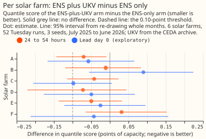

Experiment 57: does UKV, learned from its own history, help the solar-farm forecast?
Giving the Met Office's UK Variable-resolution (UKV) weather forecast, which has a 2 km grid, to a
solar-farm forecast that already uses the 51-member ensemble forecast of the European Centre for
Medium-Range Weather Forecasts (ENS) lowered the error by only about 0.03 percentage points of the
farms' capacity at 1 to 2 days ahead, so the verdict is inconclusive. The error is the quantile
score, which measures how well a forecast's range of likely power fits what happened (smaller is
better), and 1 point is 1% of a farm's capacity. The 95% interval of the difference is -0.12 to
+0.04 points. It includes zero, so the data cannot show any gain. It includes -0.10, the gain we
decided in advance would justify a new weather feed, so the data also cannot rule out a gain of that
size. It excludes gains above 0.12 points. UKV helped the six solar farms far less than it helped
the three wind farms of experiment 54,
where it lowered the error by 0.2 points. An XGBoost model given only UKV scores 0.40 points worse
than an XGBoost model given only ENS. We trained one XGBoost model per farm on ENS alone and another
on ENS plus UKV, each fitted to the archived forecasts of the weather sources it is given, with the
same training window and settings. We scored them at 24 to 54 hours after the 00 UTC start of the
ENS run's date, because UKV's forecasts stop at 54 hours. If solar is worth more work, the next step
is a source of a different kind, since a second numerical forecast of sunshine adds little at these
leads.

Results
The primary contrast C1 is the ENS-plus-UKV arm minus the ENS-only arm, for cases 24 to 54 hours
after the 00 UTC start of the ENS run's date. C1 is -0.035 (95% interval -0.119 to +0.037; 16,016
cases scored for each of three seeds, so 48,048 rows, six farms, whole months re-drawn). The
pre-registered threshold was a gain of 0.10. The verdict is inconclusive because the interval of
C1 includes both zero and -0.10. The prediction was -0.03 to -0.12, and -0.035 is at the weak end of
that range. The archive of the Centre for Environmental Data Analysis (CEDA) is not the live UKV
product. Its licence is non-commercial, and the UKV-CEDA blends
study found it statistically different from the live
feed. Any gain would therefore be a ceiling and not a gain a service could now deliver.
Absolute scores
Arm B scores best at 24 to 54 hours (3.105), and arm C, UKV alone, scores worst (3.544). The quantile score is twice the mean pinball loss over nine quantile levels, in points of capacity (smaller is better), pooled over day and night cases; night cases score near zero for every arm. Coverage is the share of cases inside the 5% to 95% band (nominally 0.90), and the 0.95 column is the share above the 0.95 quantile (nominally 0.05). Arm A is the ENS-only XGBoost model, B adds UKV, C is UKV alone, the placebo is B with the UKV values shuffled, and B3h is B with UKV rebuilt from its 3-hourly steps. The reference rows are experiment 33's ERA5-trained best guess and its ENS-trained model on the same cases. The cases are the 52 Tuesday ENS runs that have a complete UKV run.
| Arm | Lead day 0 (0 to 24 h) | 24 to 54 h | All cases | Coverage, 24 to 54 h | Above 0.95, 24 to 54 h |
|---|---|---|---|---|---|
| A, ENS only | 4.987 | 3.140 | 3.757 | 0.941 | 0.028 |
| B, ENS plus UKV | 4.957 | 3.105 | 3.724 | 0.938 | 0.028 |
| C, UKV only | 5.440 | 3.544 | 4.178 | 0.935 | 0.026 |
| Placebo | 4.992 | 3.142 | 3.760 | 0.941 | 0.028 |
| B3h, ENS plus 3-hourly UKV | 4.963 | 3.119 | 3.735 | 0.936 | 0.028 |
| Reference, ERA5-trained best guess | 5.018 | 3.247 | 3.838 | 0.913 | 0.038 |
| Reference, ENS-trained (experiment 33) | 5.220 | 3.283 | 3.931 | 0.950 | 0.023 |
The band is slightly too wide for every arm at 24 to 54 hours (coverage 0.935 to 0.941 against 0.90). Per farm at 24 to 54 hours, the scores are A 3.292, 2.936, 2.780, 3.461, 3.559, and 2.947 and B 3.221, 2.925, 2.738, 3.389, 3.509, and 2.978 at farms A to F.
What else the numbers show
All reads in this section are exploratory.
- The placebo and the 3-hourly control differ little from the plain arms. The placebo minus A is +0.002 (-0.007 to +0.012), so extra columns alone do nothing. B minus the 3-hourly control B3h is -0.014 (-0.049 to +0.008), so UKV's hourly steps are not what separates B from A.
- Five of the six farms point towards a gain, one resolvably. B minus A at 24 to 54 hours is -0.070 (-0.144 to -0.009) at farm A, -0.011 (-0.119 to +0.083) at B, -0.042 (-0.115 to +0.023) at C, -0.072 (-0.221 to +0.044) at D, -0.050 (-0.137 to +0.033) at E, and +0.031 (-0.065 to +0.152) at F. Only farm A's interval excludes zero. With six farms, at least one interval excluding zero by chance happens about one time in four, and more often because the farms share weather.

- The point estimate is more negative after UKV's upgrade. B minus A is +0.020 (-0.040 to +0.089) before the Met Office's upgrade of 2026-01-21 and -0.133 (-0.262 to -0.017) after it. The two intervals overlap, and the difference between them was not tested. The split also mixes season with upgrade (before is July to December, after is January to June) and is one of about ten exploratory splits. The XGBoost models trained wholly on pre-upgrade UKV, so the post-upgrade difference is a lead for a later test and not a result.
- Daylight cases alone give a larger point estimate with a wider interval. B minus A at 24 to 54 hours on cases with the sun above the horizon is -0.074 (-0.259 to +0.079), which includes zero, and without July 2025 it is -0.048 (-0.137 to +0.028).
- Lead day 0 and all leads agree with the primary read. B minus A is -0.031 (-0.121 to +0.065) at lead day 0 and -0.033 (-0.076 to +0.009) over all cases.
- UKV alone is worse than ENS alone. C minus A is +0.404 (+0.103 to +0.764) at 24 to 54 hours and +0.453 (+0.214 to +0.710) at lead day 0.
- The ENS-trained XGBoost model scores close to the ERA5-trained best guess. A minus the best guess is -0.107 (-0.327 to +0.053) at 24 to 54 hours, unresolved. Experiment 33's ENS-trained model scores 0.143 points worse than A (+0.087 to +0.201). Arm A is therefore not a copy of experiment 33's model, and the experiment did not find why.
How the experiment was run
- Arms: every arm is an XGBoost model with nine quantile levels, trained per farm and per seed
(0, 1, and 2) with experiment 33's recipe for its ENS-trained model: the ENS control member of the
daily 00 UTC runs from 2024-04-01 to 2025-06-30, recency weights with a half-life of 2 years,
lead_hours, and three lags of power from the 09:00 UTC origin, with no calendar column. The six farms have 37,021 to 38,768 training rows, identical for every arm. Arms A, B, the placebo, and B3h run once per ENS member and pool the 51 member quantile sets. A has 13 columns, B 16, and C 9: the three UKV columns, the solar zenith and azimuth,lead_hours, and the three lags. - UKV: the CEDA archive's 00 UTC run of the ENS run's date at each farm's nearest 2 km cell: downward shortwave flux, total cloud cover, and 1.5 m temperature, joined linearly between the hourly steps (3-hourly beyond 48 hours), with a half-hour as the mean of the hours either side. 455 of 456 training runs and 52 of 53 validation runs are complete at every farm; the run of 2026-06-30 is missing and its cases are dropped from every arm.
- Checks: UKV shortwave is never negative, peaks at 12 UTC like ENS shortwave and farm power, and is at most 3.4 W/m2 with the sun below the horizon up to 48 hours. Beyond 48 hours the linear join between 3-hourly steps gives up to 57 W/m2 before sunrise, which affects the last 6 of the 30 scored hours. UKV's mean shortwave on the scored cases is 105 W/m2 against 114 for the ENS control member. In the shuffled-UKV placebo no group of rows shuffled together has only one row, so no row kept its own UKV values.
- Latency: the experiment assumes the 00 UTC UKV run is available within 8 hours of its start and did not measure it. The service reads ENS at 09:00 UTC.
- Departures from the plan: none. The plan review, before any fit finished, had already changed the threshold from 0.15 to 0.10.
- Code:
ml-experiments/00057-product-trained-xgboost-solar-farms/. One Sonnet plan review found no leakage.
What the next experiment should answer
Whether a satellite-based nowcast at lead day 0 helps the solar farms. The two second forecasts tested so far (UKV here, and the Global Ensemble Forecast System, GEFS, in experiment 50) added little at 1 to 2 days ahead, so a test is better spent on a source of a different kind. The post-upgrade lead (-0.133) can be checked cheaply by retraining on the post-upgrade UKV months only, once a year of them exists.